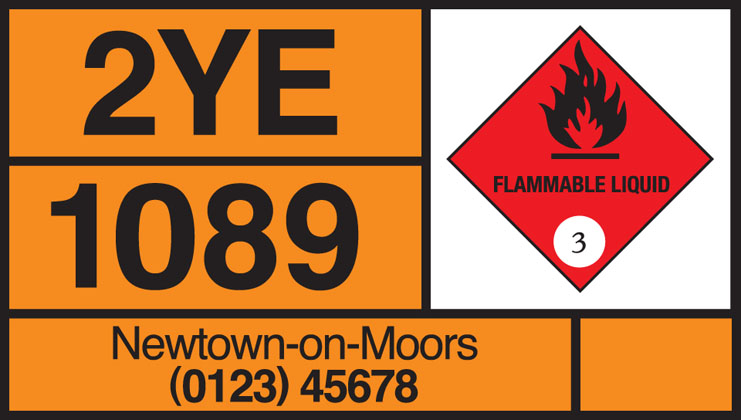

6. Vehicle markings ⾞輛標記
Vehicle markings used, including large goods vehicle rear markings, hazard warning plates, projection markers and other markings.
使⽤的⾞輛標記，包括⼤型貨⾞尾部標記、危險警告牌、投影標記和其他標記。
I. LARGE GOODS VEHICLE REAR MARKINGS
大型貨車車身標記
Motor vehicles over 7500 kilograms maximum gross weight and trailers over 3500 kilograms maximum gross weight
最⼤總重超過7500公⽄的機動⾞和最⼤總重超過3500公⽄的拖⾞

Left - Central - Right
左-中-右
The vertical markings are also required to be fitted to builders’ skips placed in the road, commercial vehicles or combinations longer than 13 metres (optional on combinations between 11 and 13 metres)
道路上放置的建築商料⽃、商⽤⾞輛或⻑度超過 13 公尺的組合⾞輛（11 ⾄ 13 公尺之間的組合可選）也需要安裝垂直標記
II. HAZARD WARNING PLATES
危險資訊⾯板
Certain tank vehicles carrying dangerous goods must display hazard information panels
某些運載危險貨物的罐⾞必須顯⽰危險資訊⾯板

The panel illustrated is for flammable liquid. Diamond symbols indicating other risks include:
所⽰⾯板適⽤於易燃液體。指⽰其他風險的菱形符號包括:
The above panel will be displayed by vehicles carrying certain dangerous goods in packages
載運某些包裝危險物品的⾞輛將會顯⽰上述⾯板

Toxic substance 有毒物質
Oxidizing substance 氧化性物質

Non-flammable compressed gas
不易燃壓縮氣體

Radioactive substance 放射性物質

Spontaneously combustible substance
⾃燃物質

Corrosive substance 腐蝕性物質

Side marker 側標記

End marker 結束標記
Both required when load or equipment (eg crane jib) overhangs front or rear by more than two metres
當負載或設備（例如起重機吊臂）向前或向後懸掛超過兩公尺時，兩者都需要
III. OTHER
其他

School bus (displayed in front or rear window of bus or coach)
校⾞ (顯⽰在巴⼠或⻑途汽⾞的前窗或後窗)